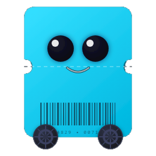

Syncro conecta a los pasajeros del transporte público con las empresas autobuseras. El pasajero consulta rutas, compra su tiquete y lo muestra como código QR al abordar. La empresa publica sus rutas, define precios y administra su flota desde un panel web.
Consultá rutas y horarios, comprá tu tiquete y mostralo como QR al abordar. Pensada para usarse en movimiento.
Publicá rutas y precios, registrá tu flota y tus choferes, y programá las salidas del día. Pensado para escritorio.